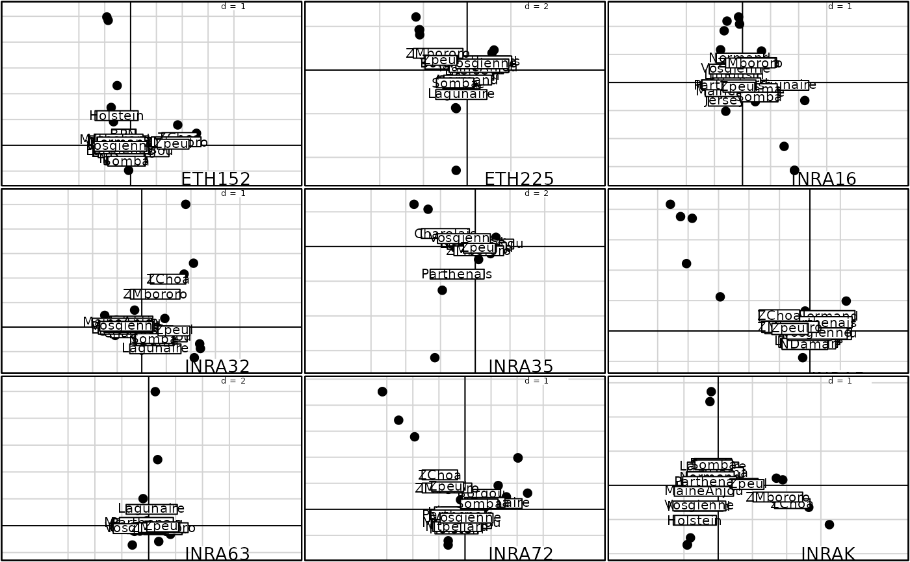

Multiple Graphs for Separated Analyses in a K-tables
kplot.sepan.Rdperforms high level plots for Separed Analyses in a K-tables,
using an object of class sepan.
Usage
# S3 method for class 'sepan'
kplot(object, xax = 1, yax = 2, which.tab = 1:length(object$blo),
mfrow = NULL, permute.row.col = FALSE, clab.row = 1,
clab.col = 1.25, traject.row = FALSE, csub = 2,
possub = "bottomright", show.eigen.value = TRUE,...)
kplotsepan.coa(object, xax = 1, yax = 2, which.tab = 1:length(object$blo),
mfrow = NULL, permute.row.col = FALSE, clab.row = 1,
clab.col = 1.25, csub = 2, possub = "bottomright",
show.eigen.value = TRUE, poseig = c("bottom", "top"), ...)Arguments
- object
an object of class
sepan- xax, yax
the numbers of the x-axis and the y-axis
- which.tab
a numeric vector containing the numbers of the tables to analyse
- mfrow
parameter for the array of figures to be drawn, otherwise use n2mfrow
- permute.row.col
if TRUE the rows are represented by arrows and the columns by points, if FALSE it is the opposite
- clab.row
a character size for the row labels
- clab.col
a character size for the column labels
- traject.row
a logical value indicating whether the trajectories between rows should be drawn in a natural order
- csub
a character size for the sub-titles, used with
par("cex")*csub- possub
a string of characters indicating the sub-title position ("topleft", "topright", "bottomleft", "bottomright")
- show.eigen.value
a logical value indicating whether the eigenvalues bar plot should be drawn
- poseig
if "top" the eigenvalues bar plot is upside, if "bottom", it is downside
- ...
further arguments passed to or from other methods
Details
kplot.sepan superimposes the points for the rows and the arrows for the columns using an
adapted rescaling such as the scatter.dudi.kplotsepan.coa superimposes the row coordinates and the column coordinates with the same scale.
Examples
data(escopage)
w1 <- data.frame(scale(escopage$tab))
w1 <- ktab.data.frame(w1, escopage$blo, tabnames = escopage$tab.names)
sep1 <- sepan(w1)
if(adegraphicsLoaded()) {
kplot(sep1, posieig = "none")
} else {
kplot(sep1, show = FALSE)
}
#> Error in s.label(dfxy = sep1$Li, labels = sep1$TL[, 2], facets = sep1$TL[, 1], xax = 1, yax = 2, plot = FALSE, storeData = TRUE, pos = -3, psub = list(position = "bottomright"), samelimits = FALSE, show = FALSE): non convenient selection for dfxy (can not be converted to dataframe)
data(friday87)
w2 <- data.frame(scale(friday87$fau, scal = FALSE))
w2 <- ktab.data.frame(w2, friday87$fau.blo, tabnames = friday87$tab.names)
if(adegraphicsLoaded()) {
kplot(sepan(w2), row.plabel.cex = 1.25, col.plab.cex = 0)
} else {
kplot(sepan(w2), clab.r = 1.25, clab.c = 0)
}
#> Error in s.label(dfxy = sepan(w2)$Li, labels = sepan(w2)$TL[, 2], facets = sepan(w2)$TL[, 1], xax = 1, yax = 2, plot = FALSE, storeData = TRUE, pos = -3, psub = list(position = "bottomright"), samelimits = FALSE, clab = list(r = 1.25, c = 0)): non convenient selection for dfxy (can not be converted to dataframe)
data(microsatt)
w3 <- dudi.coa(data.frame(t(microsatt$tab)), scann = FALSE)
loci.fac <- factor(rep(microsatt$loci.names, microsatt$loci.eff))
wit <- wca(w3, loci.fac, scann = FALSE)
microsatt.ktab <- ktab.within(wit)
if(adegraphicsLoaded()) {
kplotsepan.coa(sepan(microsatt.ktab), posieig = "none", col.plab.cex = 0, row.plab.cex = 1.5)
} else {
kplotsepan.coa(sepan(microsatt.ktab), show = FALSE, clab.c = 0,
mfrow = c(3,3), clab.r = 1.5)
}
